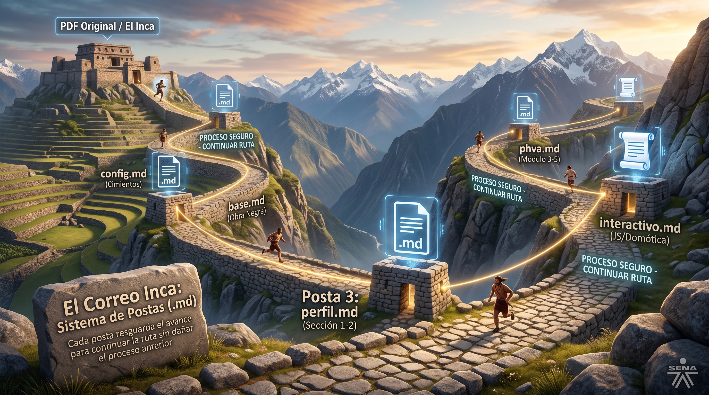

🚀 Fundamentación: Vibe Coding en el SENA
Filosofía PedagógicaEl Vibe Coding transforma el rol del servidor público, instructor o líder de proceso en un Director Semántico. En lugar de escribir código sintáctico desde cero, el usuario guía a la Inteligencia Artificial mediante instrucciones estructuradas ("Quipus") para transformar documentos estáticos (PDFs, manuales, normativas) en Artefactos Monolíticos Interactivos ejecutables sin internet.
🪢 La Alegoría del Correo Inca (Sistema de Postas)
Orquestación con IA👑 El Inca (Director Semántico / Usuario)
Posee el conocimiento experto del área (pedagógico, técnico o administrativo). Entrega el insumo fuente (PDF) y convalida la calidad del recurso en cada etapa.
🪢 El Quipu (Prompt Modular)
Instrucción técnica acotada que ordena a la LLM analizar, clasificar y construir bloque por bloque dentro del contenedor digital.
🏃 El Chasqui (La Inteligencia Artificial)
Copiloto de ejecución que procesa los datos a alta velocidad, infiere el flujo PHVA y redacta el código limpio en HTML, CSS y JS Vanilla.
🛤️ Qhapaq Ñan (La Casa sin Muebles)
Estructura monolítica (un solo archivo index.html) organizada en habitaciones delimitadas por IDs, garantizando que la IA no colapse al iterar.
📐 La Regla de Oro del Vibe Coding
Estrategia Modular⚠️ Si le pedimos toda la aplicación a la Inteligencia Artificial de un solo golpe, la memoria de contexto se satura y el código colapsa.
El secreto radica en construir habitación por habitación, sección por sección. Primero levantamos la "Obra Negra" (el cascarón HTML/CSS vacío con las 8 habitaciones) y luego amueblamos cada módulo mediante prompts acotados sin alterar las demás secciones.

🏔️ El Correo Inca: Sistema de Postas (.md) para resguardar cada avance sin reiniciar el proceso. (Haz clic para ampliar)
🎯 Casos de Aplicación por Áreas de Trabajo
Selecciona un Caso
Haz clic en los botones de conmutación (Toggle) para cargar el plano arquitectónico en /img y la distribución de habitaciones correspondiente a cada rol institucional:
🔍 Haz clic en el plano para ampliar la vista arquitectónica
🏠 Distribución de Habitaciones (Contenedores HTML)